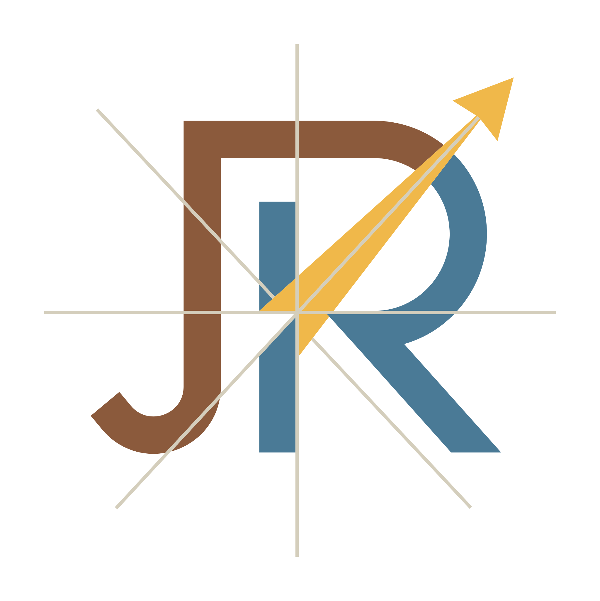

Charts & Vectors
A single visual language that reads ceremonial at one density — personal stationery, monograms, gifts — and instrumented at another — R—Net dashboards, system documentation, network diagrams. The vocabulary stays constant. Only the density and the surface temperature change.
The palette is organized in four conceptual layers. They never mix roles. Brand colors come from aircraft cockpit instrumentation. Semantic colors come from the universal red/yellow/green status vocabulary. Surface and structural neutrals come from VFR sectional charts and general aviation panel grays.
Three faces serve every typographic role. Outfit (geometric sans, 600 weight) handles display moments. Urbanist (Outfit's sibling, easier on the eye for body) carries all reading text. JetBrains Mono Nerd Font (monospace with 9,000+ icon glyphs) handles labels, metadata, status, and inline technical terms. No italics on the name or primary headlines.
36–56PX · TRACK -1.5PX
LH 1.05
28–36PX · TRACK -0.5PX
LH 1.15
11–12PX · TRACK 2.5PX
UPPERCASE
14–16PX · LH 1.65–1.75
14–16PX · LH 1.65
9–11PX · TRACK 1–1.5PX
UPPERCASE
/etc/rnet/core.toml on each node. The inline mono breaks into prose for paths, IDs, and technical terms.INHERIT SIZE
SKY-DEEP COLOR
The system speaks in two voices. They share everything — type, structural grammar, palette layers, icon vocabulary — and differ only in the surface they're written on and the accent they use. Ceremonial mode is warm paper, sky accent, for personal contexts. Instrumented mode is warm charcoal, amber accent, for R—Net contexts.
Thank you for the conversation last Thursday. The framework you sketched on the back of the menu has stayed with me, and I’ve been turning it over since. I’d value another hour when your schedule allows.

08:58 OK · cert renewed
07:14 WARN · disk 78%
02:18 ALERT · vpn recovered
Six recurring marks that give documents a consistent feel without veering into pastiche. Each has a clear job. Use them when the job applies, not for decoration. Most documents need only three: accent stripe, numbered section headers, and an occasional data caliper.
The system speaks in a curated icon vocabulary — JetBrainsMono Nerd Font, organized by role (status-ok, infra-server, home-assistant) rather than by glyph. The vocabulary spans 83 sanctioned roles across 9 categories. A representative sample is shown below — one or more glyphs per category, including the recent infrastructure, platform, and home-automation additions. The complete set is the glyph catalog; GLYPHS.md remains the authoritative registry with codepoints, source sets, sanctioned colours, and confidence tags.
reference/glyph-catalog.html. GLYPHS.md is the authoritative registry behind it.
Documented patterns for the most common document types. Each is a recipe — surface, accent, header treatment, body density, footer style — that you can follow without re-deriving every choice. New patterns are added to SYSTEM.md §10 only after they’ve been used in two distinct contexts.
- Surface
paper-true· #FAF6EC - Accent stripe
sky-deep· 4px top - MonogramTop-left, light primary lockup
- Sender metaTop-right · mono · sky-accent location glyph
- BodyUrbanist 16px · line-height 1.75 · max-width 540px
- Sign-offMono uppercase · sky-accent date highlight
- Contact (opt.)Bottom · mono · 4 fields with sky-accent glyphs
- Surface
night· #1C1E1C - Accent stripe
amber· 4px top - HeaderMonogram + R—NET wordmark left · status pill + rev right
- Tag chipsAmber / sky / ground / ok variants for scannable metadata
- Stats grid2 or 4 columns on
night-2· Outfit 500 values · amber units - Note callout
night-3panel ·skyborder ·sky-lightlabel - Sites tableFull-width on
night· amber-glyph nodes · semantic-colored status - Activity log
night-2panel · amber timestamps · semantic glow entries - FooterMuted graphite · ground-light location tag
- Surface
paper-chart· #FCF4DF - Accent stripe
sky-deep· 4px top - HeaderSectional-style with site identifier and date in mono
- BodyUrbanist 14px · normal density
- Callouts
urbanfor notes ·ok-bgfor nominal observations - FooterMono with location, time, and JR initial
- Surface
paper-trueorpaper-chart - Classification
ground-deepstripe at top - FrameCorner brackets at all four corners
- CenterpieceMonogram + title in Outfit
- MetadataMono block: REV · COPY · AUTHOR
paper-true#FAF6ECpaper-chart#FCF4DFurban#F8E4AE (callout)night#1C1E1C
Brand:
sky· personal accentground· secondary warmamber· R—Net, dark only
Outfit· display & headingsUrbanist· body textJetBrainsMono Nerd· labels, mono, glyphs
Rules:
- No italics on names or headlines
- Body line-height 1.65 minimum
- Uppercase labels: track 2.5px
- Mono is a primary voice, not a fallback
- Single accent per context. Sky for personal, amber for R—Net. Max three places per page.
- Brand & semantic are separate layers. Don’t mix.
- Negative space carries weight. Industrial elements reveal clutter, not hide it.
- Sources are honest, not invented. Cockpit, charts, drafting traditions only.
Surface
paper-true / paper-chart. Accent sky-deep. Personal letters, formal docs, field notes.
Instrumented · Dark
Surface
night. Accent amber. R—Net dashboards, status reports, infrastructure docs.
Full set:
- 01 Accent stripe
- 02 Corner brackets
- 03 Numbered section header
- 04 Registration mark
- 05 Dotted rule
- 06 Data caliper
- Not a corporate brand system
- Not maximalist — when in doubt, remove
- Not skeuomorphic — references, not imitations
- Not startup-deck aesthetic — no gradients, glass, oversized buttons
- Not single-purpose — serves both a thank-you note and a 50-page review